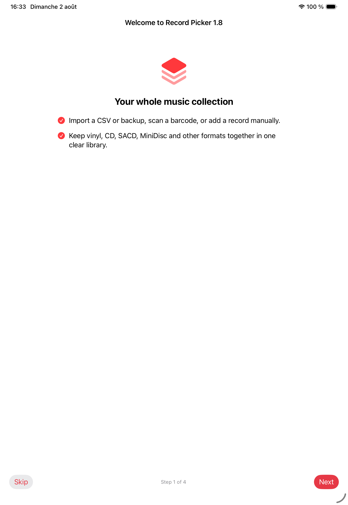
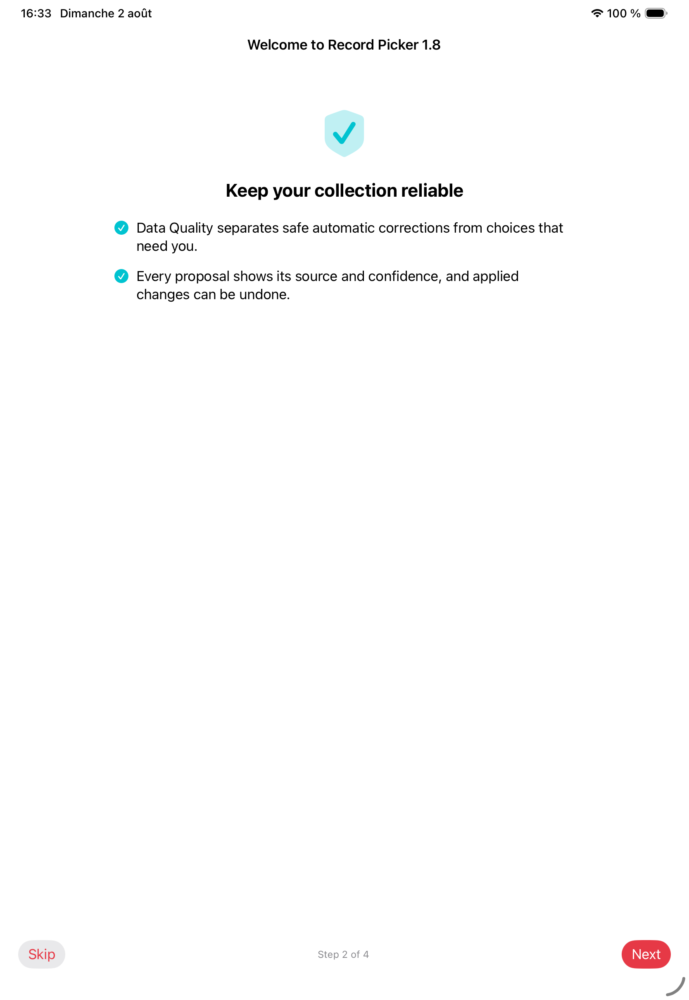
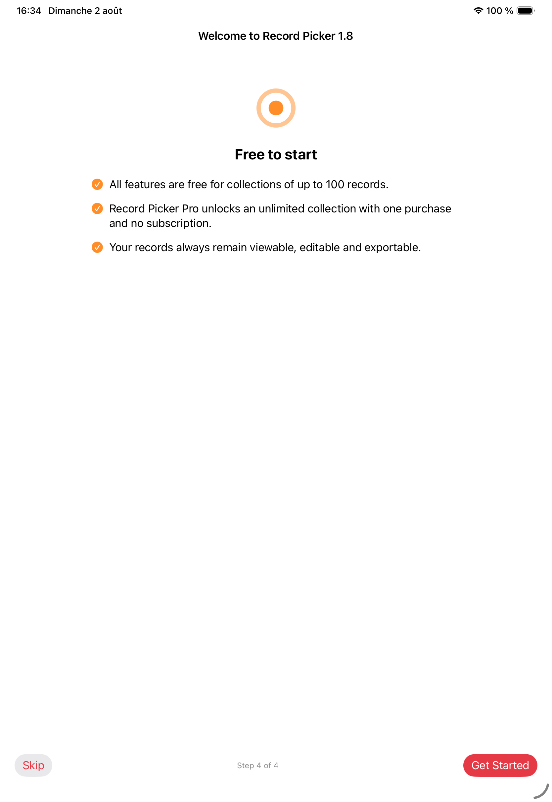

Δίκαιη κλήρωση
Σταθμισμένη κλήρωση που ευνοεί λιγότερο παιγμένους δίσκους
Βάλτε τον σωστό δίσκο.
Παίξτε το σωστό δίσκο. Ανακαλύψτε ξανά τη συλλογή σας σε iPhone, iPad, Apple Watch και Mac, με δίκαιες κληρώσεις, Mood Pick, iCloud και εργαλεία κατασκευασμένα για πραγματικούς συλλέκτες.

Έρχεται στην 1.8
Record Picker 1.8 makes Collection Health proactive and actionable.




Record Picker
Το Record Picker καταλογογραφεί βινύλια, CD και αγαπημένα άλμπουμ και προτείνει τον επόμενο δίσκο με βάση φίλτρα, αγαπημένα, εξαιρέσεις και διάθεση.

Σταθμισμένη κλήρωση που ευνοεί λιγότερο παιγμένους δίσκους
Γραμμωτός κώδικας, MusicBrainz, Discogs, δικά σας εξώφυλλα, διπλότυπα, εξαιρέσεις και ιστορικό παραμένουν εύκολα στη διαχείριση.
Κλήρωση iPhone σε οριζόντια προβολή
Λίστα επιθυμιών χωριστή από τη δισκοθήκη
App Store
Σημειώσεις έκδοσης για το Record Picker 1.6 και την εγγενή εφαρμογή Mac, διαθέσιμα τώρα.
Σύντομα
Διαθέσιμο τώρα
Διαθέσιμο τώρα
Διαθέσιμο τώρα
Διαθέσιμο τώρα
Διαθέσιμο τώρα
Διαθέσιμο τώρα
Η σελίδα υποστήριξης απαντά γρήγορα για εισαγωγή, αντίγραφα, εξωτερικές αναζητήσεις, απόρρητο και επαφή.
Άνοιγμα υποστήριξης
Η εισαγωγή CSV, η επαναφορά αντιγράφων, η σάρωση κωδικών και η χειροκίνητη καταχώριση βοηθούν ακόμη και με ελλιπή κατάλογο.
Τα αντίγραφα και οι εξαγωγές CSV/JSON ξεκινούν από τον χρήστη και αποθηκεύονται στον προορισμό που επιλέγει.
MusicBrainz, Discogs και Cover Art Archive χρησιμοποιούνται μόνο όταν ξεκινά αναζήτηση ή εμπλουτισμός.
Το Record Picker δεν έχει λογαριασμούς, διαφημίσεις, πώληση δεδομένων ή διακομιστή που αποθηκεύει τη συλλογή.

Τα άλμπουμ που προσθέτετε, εισάγετε, επεξεργάζεστε, αγαπάτε, εξαιρείτε ή επιλέγετε αποθηκεύονται στη συσκευή, μαζί με τίτλους, καλλιτέχνες, δεδομένα, είδη, σημειώσεις, ιστορικό και εξώφυλλα.
Το Record Picker δεν διαθέτει σύστημα λογαριασμών και δεν ανεβάζει τη συλλογή σε διακομιστή Record Picker.
Η συλλογή, η λίστα επιθυμιών, το ιστορικό επιλογών, τα προσαρμοσμένα εξώφυλλα και οι ανακτήσιμες διαγραφές αποθηκεύονται στη συσκευή και μπορούν να συγχρονίζονται στην ιδιωτική σου βάση iCloud όταν το iCloud είναι ενεργό για την εφαρμογή. Οι εξαγωγές εξακολουθούν να ξεκινούν μόνο με δική σου επιλογή προς τον προορισμό που διαλέγεις στα Αρχεία, όπως iCloud Drive ή OneDrive.
Το Record Picker μπορεί να χρησιμοποιεί την κάμερα για σάρωση κωδικών. Οι εικόνες δεν αποθηκεύονται ούτε κοινοποιούνται.
Η σάρωση γραμμωτού κώδικα χρησιμοποιεί το Discogs ως εφεδρεία όταν το MusicBrainz δεν γνωρίζει την αναφορά και συμπληρώνει τη φόρμα όταν βρεθεί η έκδοση.
Όταν ξεκινάτε αναζήτηση μεταδεδομένων ή εξωφύλλων, το Record Picker μπορεί να επικοινωνήσει με υπηρεσίες όπως MusicBrainz, Cover Art Archive ή Discogs.
Τα αιτήματα μπορεί να περιλαμβάνουν όρους ή γραμμωτό κώδικα και αποστέλλονται μόνο όταν ξεκινάτε αναζήτηση.
Επεξεργασία εξωφύλλων και οπτικών δεδομένων
Χωρίς τρίτους παρόχους AI και χωρίς cloud AI· το Apple Intelligence μένει στη συσκευή
Χωρίς τρίτους παρόχους AI και χωρίς cloud AI· το Apple Intelligence μένει στη συσκευή
Οι διαδικτυακές κριτικές δεν συλλέγονται ποτέ αυτόματα
Αν χρησιμοποιείτε την εφαρμογή Apple Watch, το Record Picker μπορεί να συγχρονίζει βασικές πληροφορίες μέσω των λειτουργιών της Apple.
Το εξώφυλλο γίνεται θολό φόντο, με κουμπιά για αγαπημένο, αναίρεση τελευταίας κλήρωσης και επόμενη κλήρωση, το καθένα με δική του απτική απόκριση.
Το Record Picker μπορεί να εισάγει, εξάγει, δημιουργεί αντίγραφα ή επαναφέρει αρχεία συλλογής. Τα διαχειρίζεστε εσείς.
Το Record Picker δεν χρησιμοποιεί διαφημιστική παρακολούθηση ούτε SDK διαφήμισης τρίτων.
Για ερωτήσεις σχετικά με αυτή την πολιτική απορρήτου, επικοινωνήστε στο support@recordpicker.app.
Στιγμιότυπα
Το στιγμιότυπο iPhone συμπληρώνει την προβολή iPad της αρχικής σελίδας χωρίς να επαναχρησιμοποιεί την ίδια εικόνα.


Οδηγοί βινυλίου
Τρεις οδηγοί απαντούν σε κοινές ερωτήσεις συλλεκτών: τι παίζω τώρα, πώς χρησιμοποιώ χρήσιμη τυχαία επιλογή και πώς κρατώ ζωντανή τη συλλογή.
Οδηγός βινυλίου
Πρακτικός οδηγός για να διαλέξετε ποιο βινύλιο θα παίξετε μετά χωρίς να κοιτάτε πολλή ώρα το ράφι.
Τυχαία επιλογή
Γιατί μια εφαρμογή τυχαίας επιλογής βινυλίου λειτουργεί καλύτερα όταν σέβεται φίλτρα, αγαπημένα, εξαιρέσεις και πλαίσιο ακρόασης.
Συλλογή βινυλίων
Πρακτικός οδηγός για καταλογογράφηση, εμπλουτισμό, αντίγραφα ασφαλείας και ανακάλυψη μιας συλλογής βινυλίων με το Record Picker.
Για ερωτήσεις σχετικά με την εφαρμογή, την εισαγωγή, τα αντίγραφα ή το απόρρητο, χρησιμοποιήστε τη δημόσια επαφή υποστήριξης.